2020顶会论文阅读笔记
# 概述
| 标题和核心思想 | 思路和核心解决方案 | 现有研究缺失和本文贡献 | 细节问题 |
|---|---|---|---|
| IEEE Transactions on Mobile Computing 20 JointDNN: An Efficient Training and Inference Engine for Intelligent Mobile Cloud Computing Services 把移动端、云端的优化过程建模为一个有向无环图求最短路径的问题 | |||
| SIGCOMM2020 Concurrent Entanglement Routing for Quantum Networks: Model and Designs 按照量子纠缠通信的特性设计多并发的量子中继网络 |
| ||
| SIGCOMM2020 Come as You Are: Helping Unmodified Clients Bypass Censorship with Server-side Evasion 利用GFW漏洞执行反审查 | |||
| SIGCOMM2020 1RMA: Re-envisioning Remote Memory Access for Multi-tenant Datacenters 将数据中心中的RDMA交给软件控制，硬件只提供基本的操作指令，从而更好地适应多租户环境（最了解应用的只有应用自己） | |||
| SIGCOMM2020 Interpreting Deep Learning-Based Networking Systems 用决策树和超图拟合网络控制领域用的神经网络以增强可解释性 | |||
| SIGCOMM2020 Server-Driven Video Streaming for Deep Learning Inference 在视频流+图像识别应用中，让云端而不是摄像头端判断视频帧的哪些区域需要传高清图 | |||
| MobiCom2020 OnRL: Improving Mobile Video Telephony via Online Reinforcement Learning 用强化学习规划视频电话应用的带宽使用以提升通信质量 |
# 部分详情
# JointDNN: An Efficient Training and Inference Engine for Intelligent Mobile Cloud Computing Services
只有一条直线顺序执行是如何建图？


有分支的时候如何建图？

# Concurrent Entanglement Routing for Quantum Networks: Model and Designs
本文专注于量子纠缠通信中使用量子交换(Quantum Swapping)进行路由中继的场景，主要解决在大规模组网和多并发连接情况下的路由问题。
量子纠缠路由过程：（A经过C中继器与B连接）
- C中的一个量子位与A建立纠缠
- C中的另一个量子位与B建立纠缠
- C将与AB建立纠缠的量子进行量子交换
最重要的一些假设：
- 量子中继器的拓扑结构相对稳定，变化不大（不同于包交换）
- 量子纠缠的持续时间很短，因此
- 在一次通信中，路径上的所有中继量子位必须在很短时间内建立连接（不同于电路交换）
- 量子信息转瞬即逝，在传输中途不可存储（不同于包交换）
- 一个量子位同一时刻只能用于一个信道（显然）
- 中继器量子位有限
# 总体设计
- 需要一个中央控制器
- 每个中继器都需要有全网的中继器拓扑信息
- 中央控制器向所有中继器发送信息：A要与B相连
- 每个中继器都各自计算出A到B的可行路径（由于中继器里面都是全网的拓扑信息，所以算出来的结果也是相同的）
- 路径上的中继器根据自己的位置与指定的前驱和后继中继器建立纠缠（注意这里所有可行的路径都要连上，有些可能都用不上，但有些可能会作为备用路）
- 将纠缠是否成功的信息发往周围节点
- 如果有纠缠失败的，中继器根据附近节点发来的信息在备用路径上建立纠缠
- 在成功纠缠的路径上进行量子交换
# 设计思想
- 留给找路算法的运行时间很短，所以每个中继器都要存一份全网的拓扑结构信息以快速出结果（本文应该是默认了通信消耗大于计算消耗）
- 一个路径上不会所有跳都连接失败，所有已纠缠成功的跳还能利用，但由于量子纠缠的持续时间很短，所以在找备用路径时，时间只够获取临近跳的信息
# 两个关键问题
- 如何找路？
- 如何找备用路？
- 路径好坏的评价指标？
评价指标:
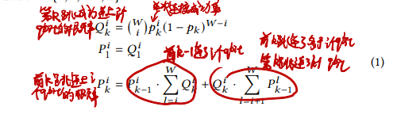 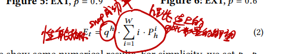
# 基于离线计算的找路算法：Q-PASS
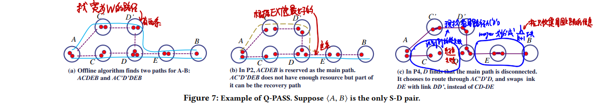
- 如何找路？
- 离线将所有可能路径都算一遍，文中没写到底具体怎么算怎么保存
- 运行时计算所有起点到终点的路径好坏，选最好的路
- 如何找备用路？
- 设置中继器可以获取到的数据跳数k，将路径划分为⌈hm/k⌉小段（从而每个小段都在中继器可以获取到的信息跳数范围内）
- 如果某一小段中出现断连（这个断连信息只在这一小段中共享），若设这一小段的起点终点为vi0和vik+1，则找一条vi0到vik+1但没用上的路径作为备用路
- 由于前面所述的基本过程，这里所有可行的路径都连上了，所以使用备用路只要进行一下量子交换即可
# 纯在线计算的找路算法：Q-CAST
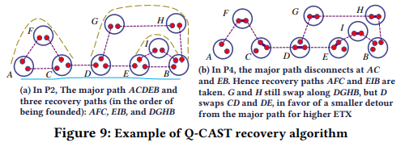
- 如何找路？
- EDA(Extended Dijkstra Algorithm)找最好的路径
- 因为这里路径“长度”不是加法算的所以要扩展Dijkstra算法
- 实操中设定一个路径跳数上限限制搜索范围加速计算
- 从图中删除找到的路径上的边
- 在剩下的图中运行EDA，重复上述过程直到EDA找不到路
- 选出最好的路
- EDA(Extended Dijkstra Algorithm)找最好的路径
- 如何找备用路？
- 在剩下的图中找与主路有两条边相连且最远离主路不大于k跳的子图标记为备用路（也就是与主路上的某一部分连成环，并且在中继器可以获取到的数据跳数为k时，消息可以传遍全部的子图）
- 当主路上有连接失败时，直接找附近的备用路进行连接即可（由于上一步找的备用路最远离主路不大于k跳，所以可以直接发信息让它们连上）
# 我的思考
研究很初级很理想化问题很多
可能存在的问题：拓扑结构相对稳定的假设可能不适合实际情况
- 为什么留给找路算法的运行时间很短？明明是找好路才开始纠缠？
- 本文居然没有考虑同步问题？文章虽然说了要保证连接同时建立，但根本上没有保障连接同时建立的手段
- 需要中心化的控制，不好
- 每个中继器都要求运行相同的找路算法，实践上不好控制
- 拓扑结构这个假设在大规模的情况下不适用，中继器拓扑结构发生变化不能及时响应
量子计算这个领域很新，网络中的各种基本问题（分布式、容错、路由之类）在这里都还没有研究过，有很多显而易见的研究方向
如何在现在要研究的领域中找到像这样的方向？看论文只能告诉我们别人研究过了哪些东西，没法知道有哪些东西是应该被研究的
比如SPINN提出之后，感觉再多的研究都是万变不离其宗，在结构上不会有什么根本性变化，除非超越BranchyNet。
BranchyNet就像是量子通信技术，SPINN就像是在这个量子通信技术上建立的量子路由算法之一。
不过，本文的量子路由系统显而易见还缺少去中心化，SPINN还缺什么？如何发现一个现有研究缺少的东西？
# Come as You Are: Helping Unmodified Clients Bypass Censorship with Server-side Evasion
这个作者很强啊，对TCP和相关协议的理解非常深入非常透彻，能猜到GFW的运行模式，知道哪些操作对客户端端没有影响，以至于能做出用服务端特殊发包方式引导客户端反GFW的操作。据论文所说，这种纯服务端的研究在反审查研究中尚属首次。
# 1RMA: Re-envisioning Remote Memory Access for Multi-tenant Datacenters
1RMA将哪些硬件职能交给了软件？👇
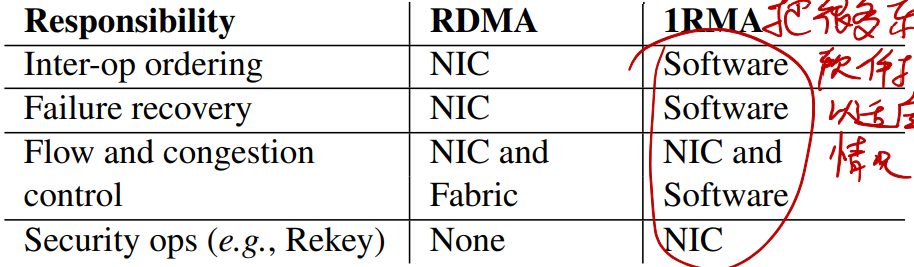
1RMA的操作执行流程👇
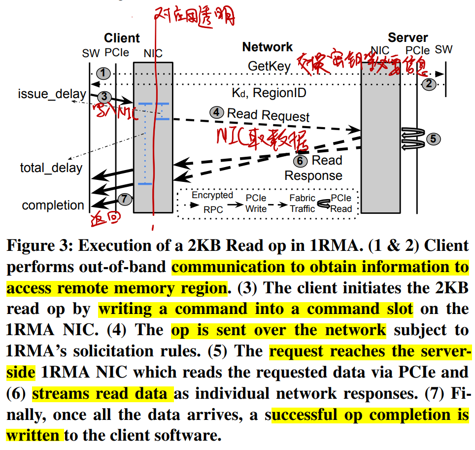
# Server-Driven Video Streaming for Deep Learning Inference
# Server-Driven和传统Source-Driven对比👇
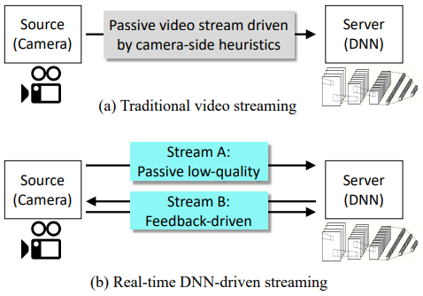
# 哪些区域需要高清？👇
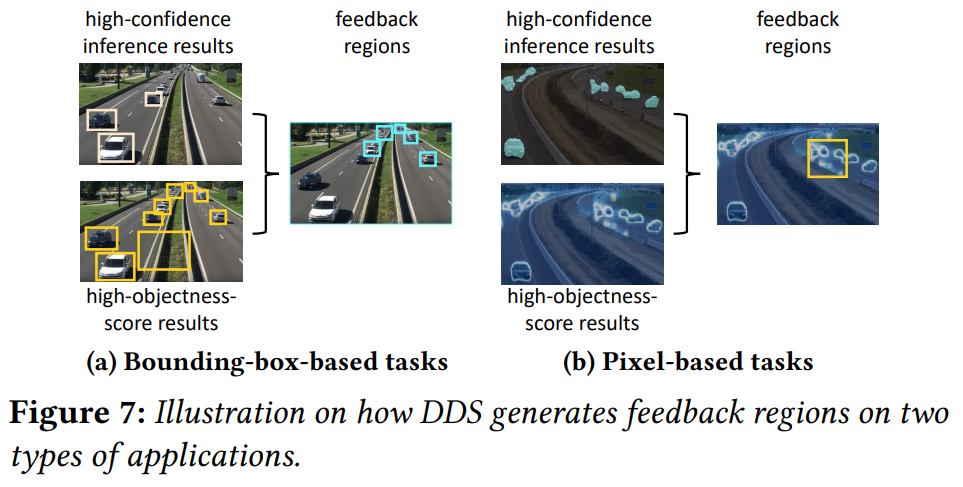
- 目标检测应用（结果为很多框，每个框对每个标签都有一个分数）
- 哪些区域不用高清feedback region：分数很高的框、很大的框
- 哪些区域需要高清feedback region：除上述框之外的所有识别出目标的框都要高清
- 语义分割应用（结果为每个像素对每个标签都有一个分数）
- 哪些区域需要高清feedback region：分数最高的标签和分数第二高的标签分数差小的像素
- 用框框住尽可能多的高分数差像素
- 哪些区域需要高清feedback region：分数最高的标签和分数第二高的标签分数差小的像素
# 如何适应变化的带宽？
- 依据：上一帧传输时的所用带宽、当前待传输帧的可用带宽（通过卡尔曼滤波估计）
- 调节：高清视频流清晰度、低清视频流清晰度
# OnRL: Improving Mobile Video Telephony via Online Reinforcement Learning
- 视频流的比特率不能想多少就多少怎么办
- 视频电话应用有它自己的控制方式，视频编码方式不能说变就变
- 把比特率的变化过程也作为强化学习的输入，让强化学习解决
- 强化学习模型出现错误行为把系统搞崩了怎么办
- 构造一些规则限制强化学习模型的行为
- 如果强化学习模型输出了不符合规则的行为，则
- 在强化学习上给予惩罚
- 用传统的比特率控制方法暂时替代强化学习模型，直到模型恢复正常
# 有趣的论文概述
| 标题和核心思想 | 思路和核心解决方案 | 现有研究缺失和本文贡献 | 细节问题 |
|---|---|---|---|
| USENIX2018 Neural Adaptive Content-aware Internet Video Delivery 用神经网络在客户端增强在线视频清晰度 | |||
| SIGCOMM2020 Neural-Enhanced Live Streaming: Improving Live Video Ingest via Online Learning 用神经网络在服务端增强直播上传视频流的清晰度 | 第一次将神经网络视频增强用在直播上传流中，这个场景最大的特点就是要训练和视频增强必须同时进行 | ||
| MobiCom2020 NEMO: Enabling Neural-enhanced Video Streaming on Commodity Mobile Devices 用神经网络在移动设备上增强视频清晰度 | 第一次将神经网络视频增强用在移动设备上，这个场景的最大特点就是算力不够以至于不能每一帧都用神经网络增强，需要配合传统的视频编解码方案 |
# 部分详情
# Neural Adaptive Content-aware Internet Video Delivery
# 神经网络太大怎么办
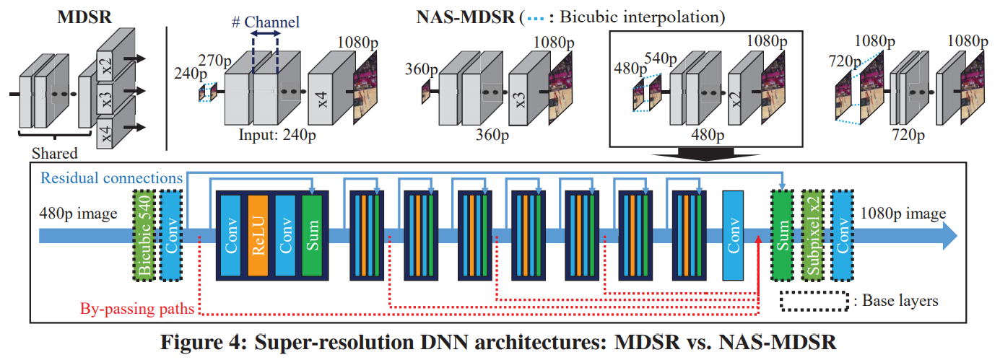
可伸缩神经网络：用于视频增强的神经网络是渐进式的，其中的有多个可选的中间层，有这些中间层时视频增强的效果更好，没有也没问题。于是客户端在开始放视频时只需要先下载基础的神经网络，中间层可以边看视频边下载。
# 如何适应变化的带宽
用强化学习决定何时下载神经网络的部分，以最大化减小对视频流下载的影响。
# NEMO: Enabling Neural-enhanced Video Streaming on Commodity Mobile Devices
仅对部分帧进行超分辨率操作，从而节约计算资源。
需要进行超分辨率计算的帧称为AP(Anchor Point)。
# 前提：一个能进行超分辨率计算的视频编解码器
普通视频编解码器：每帧包含三种信息Reference Index、Motion Vector、Residual
- 根据Reference Index从之前已解码的视频选择基础帧
- 根据Motion Vector移动像素
- 加上Residual合成解码帧
改进后的视频编码器：
- 当前帧为AP👉进行超分辨率
- 进行正常的解码操作，输出解码帧
- 对解码帧进行超分辨率计算，输出SR帧
- SR帧插入SR Cache中
- 当前帧为普通帧👉
- 根据Reference Index从SR Cache中选择SR基础帧
- 根据分辨率缩放Motion Vector，以此在SR基础帧上移动像素
- 对Residual进行插值缩放，合成SR帧
- SR帧插入SR Cache中
# 流程：哪些帧需要进行超分辨率
一个视频切分成多个短视频，每个短视频都独立训练一个模型，从而不需要很大的模型
- 确定SR模型：对于每个短视频，使用逐帧SR的方式，训练一个SR神经网络
- 确定评价指标：在保证视频质量不下降太多的情况下最小化AP数量
- 使用AP的输出SR视频质量与逐帧SR的视频质量之差在一定范围内
- 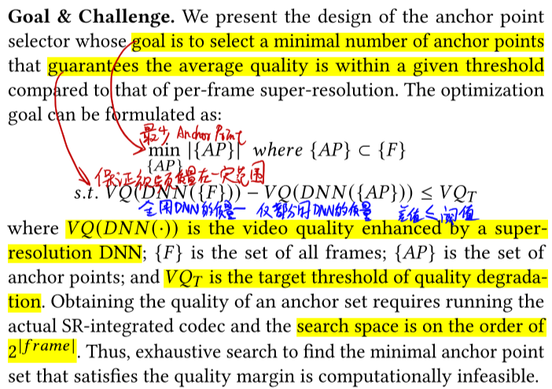
- 近似计算选择AP：可能的AP组合是帧数量的阶乘，所以要近似
- 从影响最大的帧开始选为AP，直到满足质量限制条件
- 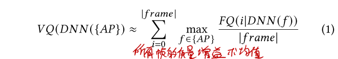
- 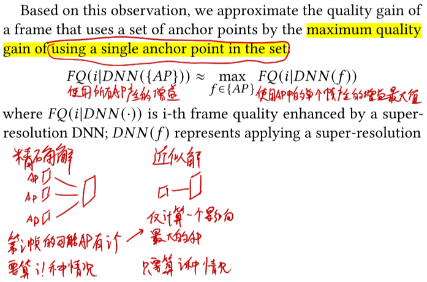
- 限制AP数量：复杂的视频片段AP数量可能要很多才能满足质量限制条件，会造成解码时视频卡顿
- 给AP数量设置上限即可
# Poster和Demo概述
| 标题和核心思想 | 思路和核心解决方案 | 现有研究缺失和本文贡献 | 细节问题 |
|---|---|---|---|
| MobiCom2020 Demo: A Query Engine for Zero-streaming Cameras 一个方便好用的视频帧查询应用，帮助用户调取感兴趣的视频 | |||
| MobiCom2020 Demo Demo: A Hyperlocal Mobile Web for the Next 3 Billion Users 一套“超本地化”的内容分发模式 感觉就是个 | |||
| MobiCom2020 Poster: CarML: Distributed Machine Learning in Vehicular Clouds 利用大街上车辆中的闲置计算资源进行数据密集型应用 |
# 部分详情
# Poster: CarML: Distributed Machine Learning in Vehicular Clouds
- 如何划分和分发batch
- 划分数据集：让计算任务所需数据不超过单个基站和车辆的存储容量，又能最大化利用计算资源
- 分发batch：基站决定将任务传给哪辆车进行计算
- 通信和汇聚计算结果
- 失败和错误处理：云端跟踪记录每个batch是否计算完成，定期向基站分发没有计算完成的batch
- 街道上分发计算任务的基站如何放置：分析历史数据，将车辆放在车流量大的位置